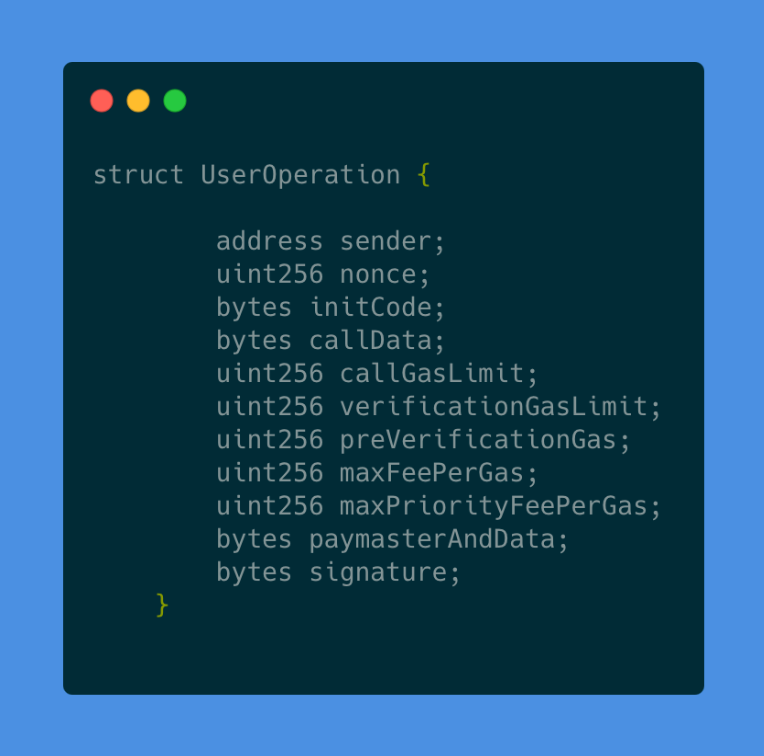

>> Account Abstraction
Hello WEB3, learning Account abstraction is a transformative approach in blockchain technology that enhances security, user experience, flexibility, scalability, interoperability, and compliance. By enabling custom logic for account management and transaction handling, it opens up new possibilities for innovation and efficiency in the decentralized ecosystem. This makes blockchain technology more accessible, secure, and versatile for both developers and users, driving the adoption and growth of decentralized applications and services.
In this blog post, we will compare account abstraction to traditional account setups, we will introduce you to some of the more exciting new use cases enabled by this technology and we will explain how you, as a web3 developer, could take advantage of this new paradigm

Clone the repo :
$ cd account-abstraction
$ npm install
>> What are the key concepts of Account Abstraction?
The key concepts of Account Abstraction are UserOperation, Bundler, Sender, EntryPoint, Paymaster, and Aggregator. In combination, these concepts work together to enable web3 developers to build smart contract wallets and make dapps compatible with SCWs.
1. UserOperation
A user operation is a “pseudo-transaction object” representing a user’s transaction intent. Any user operation can contain multiple instructions and additional data to execute smart contract calls initiated by the Smart Contract Account. UserOperations begin the 4337 transaction flow.
>> What is the difference between a UserOperation and traditional transaction?
Three key differences between a UserOperation and regular transaction are:- Additional fields - UserOperations include new fields in the transaction structure (e.g., EntryPoint, Bundler and Aggregator)
- Alternate mempool - UserOperations are sent to a separate mempool, where bundlers can package them into transactions which get included in a block
- Authentication - for a transaction, authentication is always done via a signature from a single private key that can never change for a given sender. In a user op, authentication is programmable.
2. Bundler
A bundler monitors an alternative mempool specifically built for user operations. The bundler bundles multiple user operations into a single transaction and submits that transaction to the entry point contract. Bundlers are compensated for doing this by taking a portion of the gas fees.
Bundlers are a critical piece of infrastructure to actualize ERC-4337 because all Ethereum transactions need to be initiated by an Externally Owned Account (EOA). Bundlers have EOAs, and in an account abstracted ecosystem they are the only participants that need EOAs. One of the main goals of ERC-4337 is to abstract away the need for everyone in web3 to have their own EOA wallet.
3. EntryPoint
The EntryPoint is a singleton smart contract that receives transactions from Bundlers, then verifies and executes UserOperations.
>> How does the EntryPoint verification process work?
The smart contract account gets to define its own verification and therefore its own authentication. During the verification process the EntryPoint contract checks to see if the wallet has enough funds to pay the maximum amount of gas it might possibly use, which is based on the gas fields in the UserOperation. If the wallet does not have enough funds, the EntryPoint contract rejects the transaction.
>> How does the EntryPoint execution process work?
During the execution process the EntryPoint contract executes the user operation by calling the account using the calldata specified in the user operation, and taking money from the Smart Contract Account to reimburse the Bundler with the right amount of ETH to pay for the gas.
4. Paymaster
The Paymaster is an ERC-4337 defined smart contract that handles the implementation of gas payment policies. These gas policies create flexibility for how gas is paid (e.g. in what currency) and by whom, which removes the prerequisite for users to hold native blockchain tokens to interact with the blockchain.
For example, the native blockchain token for Ethereum is ETH and the native blockchain token for Polygon is MATIC. Therefore, instead of paying gas for Ethereum transactions in the native token (e.g. ETH), users can pay for gas fees with any ERC20 token like USD Coin (USDC) or Tether (USDT).
>> Paymasters allow application developers to:
- Sponsor gas fees for their users
- Enable gas payments in stablecoins
- Enable gas payments in other ERC-20 tokens
5. Aggregator
An Aggregator is a smart contract that implements a signature scheme that supports aggregation (i.e. a contract that can verify aggregated signatures. If multiple messages are signed with different keys, then a single combined signature can be generated that verifies the combined signature, and implies that all the constituent signatures are also valid.
By combining multiple signatures into a single signature, aggregators help save on calldata costs, with multiple bundled UserOperations validated in a single step.
>> New Use Cases Enabled by Account Abstraction
1. Enabling authorization over assets inside a wallet
Because of how the conventional EOA model works, if someone knows the private key for an EOA, they have complete control over all the assets the account holds. With account abstraction, on the other hand, because it's programmable, it's now possible to enforce rules about what a given private key can do. You can now enforce custom rules of any level of complexity, like multi-signature requirements, time-lock conditions and limits on transfer amounts and frequency. You can even restrict what smart contracts the account can interact with.
2. Facilitating fee sponsorship
Currently, for a user to be able to transact on the blockchain, they need to have at least a small amount of the chain's native token in their EOA to cover gas fees. This introduces a significant friction point for the end user, as funding an EOA for the first time could be a challenging task involving CEXes, KYC and AML requirements.
ERC-4337 introduces the concept of a "paymaster", an entity that can cover the transaction fees on behalf of the user. Instead of the user having to pre-fund their own SCA, a sponsoring dapp will connect the user's SCA to their paymaster. This way, the SCA creation process as well as future transactions will have no cost for the user.
3. Enhancing transaction fee payments
As mentioned before, ERC-4337 doesn't require any protocol-level changes which means that transaction fees need to be paid in ETH. However, thanks to the programmability of SCAs and the introduction of paymasters, it's now possible to enable the user to pay for fees using any ERC-20 token they like, for example a stablecoin or a dapp’s native token (AAVE, UNI, COMP, etc).
4. Account automation and pull transactions
In the conventional world of web2 many financial transactions inherently operate on a pull basis. For example, when paying for a subscription you don't actually need to take any action every month to pay for it, but instead the funds are pulled automatically from your payment method. Right now, for Ethereum and other EVM-based chains, the only type of transaction that exists is the push transaction, where the account owner needs to actively execute an action to send funds to a third party.
With account abstraction, on the other hand, it's now possible to grant access to a third-party to pull funds from your SCA automatically for a specified amount and with a specified periodicity. This allows for web2-like functionality in web3 applications, such as automatic payments and subscriptions.
5. Batch transactions
One of the hindrances with current dapps is having to approve multiple independent transactions to accomplish a single task. For example, when swapping USDC for ETH on Uniswap, you first have to sign a transaction approving the spending of USDC and then sign another one approving the actual swap. With account abstraction, you can now batch these two transactions into a single approval flow, which significantly improves the user experience.
6. Improved recovery mechanisms
Wallet security is one of the biggest problems web3 is facing right now. Unfortunately, self-custody is too complex for the average user, and relying solely on centralized custodians has its own set of risks. Account abstraction can enable more flexible account recovery options, such as social recovery methods. Social recovery, a method for securing a wallet introduced by Vitalik Buterin, allows for the recovery of the wallet with the help of a user's social network.
>> Differences Between Traditional Wallets and AA Wallets
In a traditional wallet, a user owns a private key that controls an EOA and every interaction with a dapp requires the user's approval. From the developer's perspective, this means the wallet requires a signed transaction from the user that is then sent to a node to be included in the transaction mempool.
The ERC-4337 standard for Account Abstraction stipulates that transactions are initiated by a SCA acting on behalf of the user, instead of being initiated by an EOA as is typically the case. However, the user must first signal their intention to execute a transaction before the SCA can send it. This is done by issuing a specific message known as a "user operation", or userOp.
Just as Ethereum transactions need to be signed by the account owner, userOps also need to be signed by the user. However, the signature here is more flexible compared to a traditional transaction. In Ethereum and other EVM-based chains, the only method allowed for signing transactions is the ECDSA algorithm. According to the ERC-4337 standard, a SCA could use other methods as well, such as BLS signatures.
Once the userOp has been signed, it's ready to be sent to the network, but its journey is slightly different than that of a traditional transaction. Rather than being sent directly to a node, userOps are sent off chain to a "Bundler". Since only EOAs can initiate transactions, this Bundler acts as an EOA, aggregating multiple userOps together and sending them to the user's SCA via a special smart contract called the "Entry Point".
| Traditional EOAs | Account Abstraction |
|---|---|
| The basic unit of execution is called a transaction. | The basic unit of execution is called a user operation or userOp. |
| Transactions are signed using the end user's private key | UserOps are signed by the end-user using any method supported by the SCA. |
| Transactions are sent to an Ethereum node through an RPC call | UserOps are sent to a bundler through an RPC call |
| Transactions are eventually packaged into a block and added to the blockchain | UserOps enter a userOp mempool and are eventually picked up and sent to the Entry Point for processing. |
| The calldata for the transaction is processed by the target smart contract. | The calldata for the userOp is processed by the SCA. Although this calldata could potentially invoke any function within the SCA, it typically aims to execute a specific function within a target smart contract. |
Within the context of Account Abstraction, "account creation" doesn't actually refer to the creation of the SCA. Rather, it's about calculating the SCA's address. The actual deployment of the SCA only occurs when the user sends their first userOp to a bundler.
Secondly, the approach to sending transactions to the network changes under Account Abstraction. Instead of sending a transaction from an EOA, the user's wallet constructs a userOp that is then sent to a bundler. Just as in traditional Ethereum programming, there are numerous ways to accomplish this, ranging from manual, low-level coding where you personally create the userOp, fill in all the fields, and then sign it, to more convenient methods utilizing third-party tools like Alchemy's AA SDK.
>> Understanding the Structure of a UserOp
To enhance our understanding of what a userOp does, let's take a closer look at its components. A userOp is represented as a **struct, defined as follows:
- sender: This refers to the SCA’s address.
- nonce: A unique value used by the sender to prevent replay attacks.
- initCode: If supplied, this code will be responsible for the creation of the SCA. Further details on this process are explained in the sections below.
- callData: This represents the method call that will be executed on the SCA.
- signature: This is a sender-verified signature over the entire userOp.
The sender, nonce, and signature fields in a userOp align closely with their counterparts in a traditional transaction.
initCodeAs it's mentioned in the original ERC-4337 proposal, one of the cornerstones of Account Abstraction is retaining the ability of users to locally create their wallet and immediately start accepting funds, a feature inherent to Externally Owned Accounts (EOAs).
In order to achieve this, the standard proposes a factory contract equipped with a method to create an account, that is triggered the first time a user sends a userOp, creating a new SCA for the user. The factory contract address, the function that creates the SCA (usually called **createAccount), and its parameters are all contained within the initCode field. The parameters are the owner account address and a salt, all encoded in the form of a calldata field.
callDataWhile the callData field also exists in traditional transactions, its function within Account Abstraction differs. Here, callData refers to the code the SCA will execute. The specific function inside the SCA that this field calls is determined by the intended use of the SCA, and can therefore vary.
>> Steps to execution of a User operation
1. User Initiates Operation
The user initiates an operation, such as a transaction, through their interface (e.g., a decentralized application (dApp) or wallet interface). Example: A user wants to transfer tokens to another address.
2. Create User Operation Object
The interface creates a user operation object that contains the details of the operation. Fields might include: sender, recipient, value, data (call data), gas limit, gas price, nonce, and any custom logic or conditions.
3. Validate User Operation
The user operation is passed to the user's smart contract wallet, which validates the operation according to custom rules defined in the wallet's smart contract. This validation could include checking the user’s balance, verifying signatures, ensuring nonce correctness, and applying any other custom logic.
4. Meta-Transaction (Optional)
If the user does not have enough native cryptocurrency to pay for gas, a meta-transaction can be used. The operation is signed by the user but submitted to the blockchain by a relayer. The relayer might be compensated through alternative means or later reimbursed by the user.
5. Submit Operation to Blockchain
The validated user operation is submitted to the blockchain as a transaction. This can be done directly by the user or via a relayer in the case of a meta-transaction.
6. Smart Contract Wallet Executes Operation
The smart contract wallet on the blockchain receives the transaction and executes the operation. The smart contract logic processes the transaction based on the details provided and any custom rules. Example: The wallet transfers tokens to the specified recipient after ensuring all conditions are met.
7. Custom Logic and Hooks
During the execution, custom hooks or logic defined in the smart contract can be triggered. These hooks might perform additional checks, modify the operation, or execute supplementary tasks. Example: A pre-transfer hook checks if the user has met certain criteria before allowing the transfer.
8. Handle Gas Fees
The transaction's gas fees are handled according to the predefined method. If a relayer is used, they pay the gas fees, and if not, the fees are deducted from the user’s balance or managed by the smart contract.
9. Operation Confirmation
Once the operation is successfully executed, it is confirmed on the blockchain. The user’s interface is updated to reflect the successful transaction. The user is notified of the successful completion, and the blockchain state is updated accordingly.
>> Potential Drawbacks for Account Abstraction
We already covered how Account Abstraction and the ERC-4337 proposal could offer many potential benefits to web3. We will now examine some potential challenges and drawbacks of Account Abstraction:
- Learning curve: There is a steep learning curve associated with understanding the new concepts introduced by the proposal, as well as how to implement those concepts in practice. This increased complexity could slow down developer adoption in the short term.
- Security risks: The proposal introduces new participants, such as the bundlers and the paypasters, which could potentially be exploited if not properly secured. Replay attacks are also a concern, as the way signatures and nonces are used is not specified in the standard, but left for the developer to implement them as they see fit.
- Potential for centralization: While the proposal is aligned with Ethereum's decentralization ethos (for example by allowing anyone to run a bundler or a paymaster) it's still possible that if a few entities dominate these roles it could potentially lead to centralization.
- Maintenance Challenges: The introduction of new elements in the ecosystem could make the network and the applications more difficult to maintain and monitor.
- Is more expensive: Performing an action on-chain using a userOp is typically more expensive compared to sending a transaction from an EOA. That's because of all the overhead that makes AA possible, like, for example, the bundler that needs to be paid for its services and the validation of the userOps by the Entry Point.